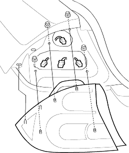

- Open the trunk lid.
- Disconnect each connector from the taillight.
Brake/Taillight:21/5 W
Back-up Light18 W
Turn Signal Light:27 W
Side Marker Light
(KK, KX, KY):3.8 W

- Remove the four nuts and taillight.
- Install in the reverse order of removal.
- When installing the taillight check the gasket; if it is distorted or stays compressed, replace it.
- After installing the taillight run water over the taillight to make sure it does not leak.